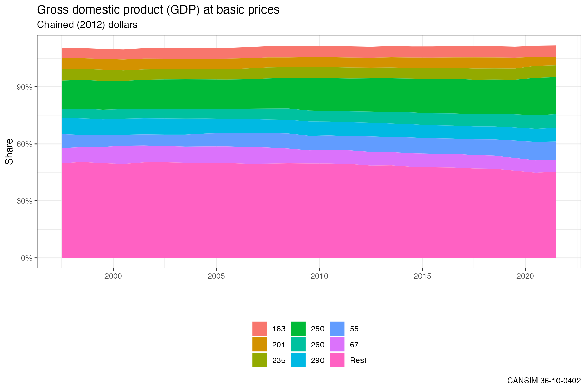

Working with Statistics Canada data table object hierarchies
2021-06-01
Source:vignettes/working_with_hierarchies.Rmd
working_with_hierarchies.RmdThis vignette showcases how to utilize the metadata information by drilling into North American Industry Classification System (NAICS) categories and the hierarchy metadata that is downloaded with tables that have hierarchical data.
Retrieving metadata
The get_cansim_table_overview function displays an overview of table information. If the table is not yet downloaded and cached it will first download the table itself. Let’s take a look what’s in the table we are interested in.
library(cansim)
# select a table number
table_id = "36-10-0402"
# get table overview
get_cansim_table_overview(table_id)
#> Accessing CANSIM NDM product 36-10-0402 from Statistics Canada
#> Parsing data
#> Gross domestic product (GDP) at basic prices, by industry, provinces and territories
#> CANSIM Table 36-10-0402
#> Start Reference Period: 1997-01-01, End Reference Period: 2020-01-01, Frequency: Annual
#>
#> Column Geography (13)
#> Newfoundland and Labrador, Prince Edward Island, Nova Scotia, New Brunswick, Quebec, Ontario, Manitoba, Saskatchewan, Alberta, British Columbia, ...
#>
#> Column Value (3)
#> Current dollars, Chained (2012) dollars, Contributions to percent change
#>
#> Column North American Industry Classification System (NAICS) (337)
#> All industries, Goods-producing industries, Service-producing industries, Industrial production, Non-durable manufacturing industries, Durable manufacturing industries, Information and communication technology sector, Information and communication technology, manufacturing, Information and communication technology, services, Energy sector, ...Accessing table data
We see that data set come with three different measures and 307 different NAICS values. Let’s load the data and focus on just “Chained (2012) dollars”.
library(dplyr)
#>
#> Attaching package: 'dplyr'
#> The following objects are masked from 'package:stats':
#>
#> filter, lag
#> The following objects are masked from 'package:base':
#>
#> intersect, setdiff, setequal, union
data <- get_cansim(table_id)
#> Reading CANSIM NDM product 36-10-0402 from cache.
selected_value = data$Value[grepl("Chained",data$Value)] %>% unique()
data <- data %>%
filter(Value == selected_value)Taking advantage of metadata
This table includes all the different levels of NAICS categories in one dimension. This makes working with the data at that level rather cumbersome when we are often only interested in specific sub-categories. The internal hierarchy can help with that. Let’s first get an overview of the data. We can also use this to easily compute shares instead of totals.
We can extract the hierarchy using the built-in convenience function categories_for_level which takes in a cansim-package retrieved data table object with metadata as input and requires a field from which to extract categories from as well as a level indicating the target depth level of the hierarchy that we wish to extract.
# Extract top-level hierarchy to calculate total
top_level <- categories_for_level(data, "North American Industry Classification System (NAICS)",0)
# Extract total using hierarchy and calculate share by NAICS.
# This could also be done using grouping functions from dplyr,
# but we wanted to demonstrate how to use specific hierarchy levels.
total_data <- data %>%
filter(`North American Industry Classification System (NAICS)` %in% top_level) %>%
rename(Total = val_norm) %>%
select(Date, GEO, Total)
# Merge total back in and calculate share for every NAICS code
data <- data %>%
left_join(total_data) %>%
mutate(Share = val_norm/Total)
#> Joining, by = c("GEO", "Date")Hierarchies in more detail
There are hundreds of NAICS codes here which is too many to make sense of at the same time. We can use categories_for_level again to reduce our NAICS codes just to the first sub-level which represents the industry groups. We can call this subset cut_data. (Note that the NAICS data also includes composite groups of industries, something like a level 0.5 hierarchy, which are prefixed with a “T” and which we want to remove as well.)
cut_data <- data %>% filter(
!grepl("T\\d+",`Classification Code for North American Industry Classification System (NAICS)`),
`North American Industry Classification System (NAICS)` %in%
categories_for_level(.,"North American Industry Classification System (NAICS)",1))
# How many are NAICS categories left?
n <- length(cut_data$`North American Industry Classification System (NAICS)` %>% unique)There are still 22 level 1 categories, too many to sensibly visualize at the same time. We can use dplyr functions to identify the top categories and group the rest so that we can have a plot that is easier to understand.
# Specify which regions and period we want to look at
regions = "British Columbia"
period = "2019-07-01"
# Select the top-8 categories for our reference region and period
top_categories <- cut_data %>%
filter(GEO %in% regions, Date == period) %>%
top_n(8,Share) %>%
pull("North American Industry Classification System (NAICS)")
# Group remaining categories together and prepare data for plot
plot_data <- cut_data %>%
mutate(NAICS = ifelse(`North American Industry Classification System (NAICS)` %in% top_categories,`North American Industry Classification System (NAICS)`,"Rest")) %>%
select(Date, GEO, NAICS, VALUE, Share) %>%
group_by(Date, GEO, NAICS) %>%
summarise(VALUE = sum(VALUE, na.rm = TRUE),
Share = sum(Share, na.rm = TRUE),
.groups = "drop") With the data prepared, the last step is putting it all together into a visualization using ggplot2. We can then see if any further adjustments are required.
library(ggplot2)
ggplot(plot_data %>% filter(GEO %in% regions),
aes(x = Date, y = Share, fill = NAICS)) +
geom_area(position="stack") +
scale_y_continuous(labels = scales::percent) +
theme_bw() +
theme(legend.position = "bottom",legend.direction ="vertical") +
guides(fill=guide_legend(ncol = 3)) +
labs(title="Gross domestic product (GDP) at basic prices",
subtitle=selected_value,
x="", fill = "",
caption=paste0("CANSIM ", table_id)) Let’s have a closer look at the “Real estate and rental and leasing” and “Construction” categories. Once again we turn to the categories_for_level function to make grabbing the sub-categories an easier process.
real_construction <- c("Construction [23]","Real estate and rental and leasing [53]")
# Get the NAICS hierarchy codes just for these categories
rrl_hierarchy <- data %>%
filter(`North American Industry Classification System (NAICS)` %in% real_construction) %>%
pull("Hierarchy for North American Industry Classification System (NAICS)") %>%
unique
# Filter out all sub-categories for Real Estate.
# The paste with | trick ensures that we grepl for all matches.
rrl_data <- data %>%
filter(grepl(paste(rrl_hierarchy,collapse="|"),`Hierarchy for North American Industry Classification System (NAICS)`))
# Ensure we only retain the NAICS leaves and none of the aggregate subcategories
rrl_data <- rrl_data %>%
filter(
`North American Industry Classification System (NAICS)` %in%
categories_for_level(.,"North American Industry Classification System (NAICS)")) %>%
rename(NAICS=`North American Industry Classification System (NAICS)`)
# Plot with labels from our original selections
ggplot(rrl_data %>% filter(GEO %in% regions),
aes(x = Date, y = Share, fill = NAICS)) +
geom_area(position = "stack") +
scale_y_continuous(labels = scales::percent) +
theme_bw() +
theme(legend.position = "bottom",legend.direction ="vertical") +
guides(fill=guide_legend(ncol=1)) +
labs(title="Gross domestic product (GDP) at basic prices",
subtitle=paste0(regions,", ", selected_value),
x="",
caption=paste0("CANSIM ", table_id)) We observe in the resulting chart that the largest contributors to GDP in this sector in British Columbia are Owner-occupied dwellings (imputed rent) and Lessors of Real estate (rent), followed by Residential building construction.
We observe in the resulting chart that the largest contributors to GDP in this sector in British Columbia are Owner-occupied dwellings (imputed rent) and Lessors of Real estate (rent), followed by Residential building construction.